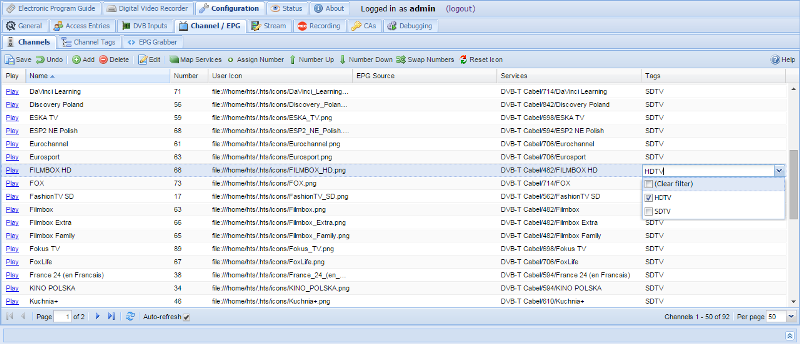

Configuration - Channels
Display and edit channel configuration here.
The channels are listed / edited in a grid.
-
To edit a cell, double-click on it. After a cell is changed it will flags one of its corner to red to indicated that it has been changed. To commit these changes back to Tvheadend press the ‘Save changes’ button. In order to change a Checkbox cell you only have to click once in it.
-
To delete one or more entries, select the lines (by clicking once on them), and press the ‘Delete selected’ button. A popup will ask you to confirm your request.

Menu Bar
The menu bar items have the following functions:
Save
Undo
Add
Delete
Edit
Map Services
Assign Number
Number Up
Number Down
Swap Number
Reset Icon
Columns
The columns have the following functions:
Play : Direct play link using the HTTP streaming.
URL to the stream using a channel name:
http://*host:port*/play/stream/channelname/*channel\_name*
URL to the stream using a channel number:
http://*host:port*/play/stream/channelnumber/*channel\_number*
Enabled : Whether or not the mux is enabled and thus available. Channel number. This is not used by Tvheadend internally, but rather intended to be used by HTSP clients for mapping to remote control buttons, presentation order, etc
Number : Channel number. This is not used by Tvheadend internally, but rather intended to be used by HTSP clients for mapping to remote control buttons, presentation order, etc
Name : Name of the channel as presented in EPG and external interfaces. Changing name of a channel does not interfere with scheduled recordings, etc.
Play : Play the channel using the VLC plugin (if available) else it will display a direct link that can be used to open in preferred media player.
Auto EPG Channel : Auto-link EPG channels from XMLTV and OpenTV EPG grabbers using the channel name for matching. If you turn this option off, only OTA EPG grabber will be used for this channel unless the EPG Grab Source option (below) is not set manually.
EPG Grab Source : Name of the Internet-based EPG provider (typically XMLTV) channel that should be used to update this channels EPG info. By default Tvheadend tries to match the name itself, but sometimes it might not match correctly in which case you can do the mapping manually. When using XMLTV, a newly-mapped channel will not appear in the EPG until the next run of the grabber, or service restart.
Over the air (OTA) sources do NOT need to be mapped in this way, the linking is implicitly tied since they are all part of the DVB system.
Tags : Each channel can be bound to a zero, one or many tags. The tags are used for multiple things and it’s up to you how you wish to use and name them. Tags can be used to aid searching in the EPG if you have many channels. The tags are also presented in a Media player.
User Icon : A URL pointing to an image representing the channel. The icon URL will be set automatically when importing data from XMLTV, when picon path is set or when channel icon path is set in the general config. This field allows the user to edit it manually. The reset icon action allows to re-set the automatic URL for selected channel (e.g. after configuration change).
DVR Pre-Start : Allows the user to specify an amount of extra time that should be prepended to a recording scheduled on this channel. In other words, if you type 5 here for a recording that is scheduled for 20:00 will start to record at 19:55. This setting overrides the Extra time before recordings DVR setting.
DVR Post-End : Similar to DVR Pre-Start this allows the user to add an extra amount of time that should be appended to a recording. In other words, if you type 5 here for a recording that is scheduled to end 20:30 will stop to record at 20:35. This setting overrides the Extra time after recordings DVR setting.